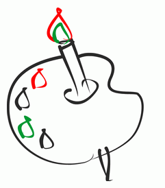

За рулём сижу довольный — Ездить прото и легко! Только руль чуть-чуть огромный И педали далеко.

Мне купили паровозик, Сразу два вагона возит. Я включу его, и он За собой везет вагон. Вот бы мне в нём прокатиться, Только жаль — не поместиться.

Нарисую я в альбоме Голубое море, Белый парус на волною Бьётся на просторе.